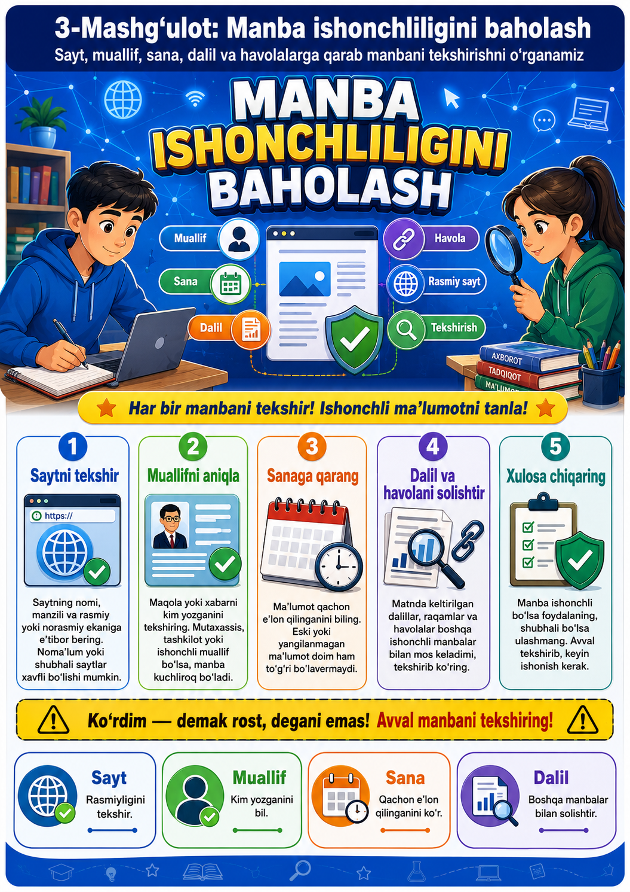

Dars jarayoni
45 daqiqalik namunaviy dars taqsimoti
Tashkiliy qism
Salomlashish, davomat, mavzu va dars maqsadini e’lon qilish.
Motivatsiya
“Biror xabarni ko‘rsak, unga darhol ishonish mumkinmi?” savoli asosida suhbat tashkil qilinadi.
Nazariy tushuntirish
Manba, muallif, sana, dalil, havola, xolislik va maqsad tushunchalari misollar orqali izohlanadi.
Amaliy mashq
O‘quvchilar 2 ta xabar namunasi va 1 ta sayt sahifasini “7 mezon” asosida baholaydi.
Mustahkamlash
“Ishonchli manba belgisi” bo‘yicha tezkor savol-javob va guruh xulosasi.
Baholash
O‘quvchilar test va yozma savollarni bajaradi, uyga vazifa beriladi.
Dars pasporti
Mavzuning qisqacha metodik tavsifi
Dars maqsadi
O‘quvchilarda axborot manbasining ishonchliligini aniqlash, ma’lumotni tekshirish, shubhali belgilarni topish va dalillarga asoslangan xulosa chiqarish ko‘nikmalarini rivojlantirish.
Jihozlar
Kompyuter, proyektor, internet, taqdimot, infografika, video lavha, tahlil varaqasi, 2–3 ta xabar namunasi va baholash kartasi.
O‘quv maqsadlari
Dars yakunida o‘quvchi quyidagilarni bajara oladi:
Biladi
Manba, muallif, dalil, sana, havola va fakt tushunchalarini izohlab bera oladi.
Tahlil qiladi
Sayt yoki postdagi axborotni ishonchlilik mezonlari asosida tekshiradi.
Xulosa chiqaradi
Axborotni tarqatish yoki rad etish bo‘yicha asosli qaror qabul qiladi.
Nazariy qism
Manba ishonchliligi nima va nima uchun muhim?
Manba ishonchliligi nima?
Manba ishonchliligi — axborotning qayerdan olingani, uni kim yozgani, qachon e’lon qilingani, qanday dalillarga tayangani va boshqa manbalar bilan qanchalik mos kelishini baholash jarayonidir.
Nega tekshirish kerak?
Internetda noto‘g‘ri, eski, reklama maqsadidagi yoki manipulyativ xabarlar ko‘p uchraydi. Manbani tekshirish o‘quvchini shoshma-shosharlik, yolg‘on xabar va axborot xurujlaridan himoya qiladi.
Manbani baholashning 7 mezoni
Har qanday sayt, post yoki videoni quyidagi mezonlar asosida tekshiring.
Muallif
Kim yozgan? Muallif mutaxassismi? Ismi va faoliyati ochiq ko‘rsatilganmi?
Sana
Ma’lumot qachon e’lon qilingan? U hozir ham dolzarbmi yoki eskirib qolganmi?
Dalil
Xabarda fakt, raqam, hujjat, rasmiy ma’lumot yoki tadqiqot keltirilganmi?
Havola
Xabar boshqa ishonchli manbalarga havola beradimi? Havolalar ishlaydimi?
Maqsad
Axborot xabardor qilish uchunmi, reklama uchunmi yoki qo‘rqitish uchunmi?
Xolislik
Matn bir tomonlama emasmi? Unda hissiyotga bosim qiluvchi so‘zlar ko‘p emasmi?
Solishtirish
Shu ma’lumot boshqa rasmiy yoki nufuzli manbalarda ham tasdiqlanganmi?
Xulosa
Yetti mezondan kamida beshtasi aniq bo‘lsa, manba nisbatan ishonchli deb baholanadi.
Ogohlantirish
“Zudlik bilan tarqating!”, “100% rost!”, “Hamma bilsin!” kabi chaqiriqlar shubha uyg‘otadi.
Ishonchli va ishonchsiz manba belgilarining qiyosiy tahlili
O‘quvchilar uchun tezkor solishtirish jadvali
| Belgi | Ishonchli manba | Ishonchsiz manba |
|---|---|---|
| Muallif | Muallif yoki tashkilot aniq ko‘rsatiladi. | Muallif noma’lum yoki yashirilgan bo‘ladi. |
| Sana | E’lon qilingan va yangilangan sana bor. | Sana yo‘q yoki juda eski ma’lumot berilgan. |
| Dalil | Raqamlar, hujjatlar, mutaxassis fikri va havolalar keltiriladi. | Dalilsiz gaplar, shov-shuvli da’volar ko‘p bo‘ladi. |
| Til uslubi | Xolis, aniq va odobli tilda yoziladi. | Qo‘rqituvchi, haqoratli yoki hissiyotga ta’sir qiluvchi so‘zlar ishlatiladi. |
| Maqsad | O‘quvchini xabardor qilish, tushuntirish yoki ogohlantirishga xizmat qiladi. | Ko‘proq chalg‘itish, reklama qilish yoki tez tarqatishga undaydi. |
Manbani tekshirish algoritmi
“Tekshir — solishtir — xulosa qil” tamoyili
- 1-qadam: xabar sarlavhasi va mazmunini diqqat bilan o‘qing.
- 2-qadam: muallif yoki sayt nomini aniqlang.
- 3-qadam: e’lon qilingan sanani tekshiring.
- 4-qadam: dalil, rasmiy havola yoki manba bor-yo‘qligini ko‘ring.
- 5-qadam: shu xabarni boshqa ishonchli manbalardan qidiring.
- 6-qadam: xabar hissiyotga bosim qilayotgan yoki shoshiltirayotgan bo‘lsa, ehtiyot bo‘ling.
- 7-qadam: faqat tekshirilganidan keyin xulosa chiqaring va ulashing.
Amaliy topshiriqlar
Mavzuni mustahkamlash uchun 6 ta mashq
1-topshiriq
Berilgan xabardan muallif, sana, manba va asosiy da’voni ajrating.
2-topshiriq
Xabarni kamida ikki boshqa manba bilan solishtiring va farqlarini yozing.
3-topshiriq
Matndagi fakt va fikrlarni alohida ustunlarga ajrating.
4-topshiriq
Havolalar ishlashini, rasmiyligini va mavzuga mosligini tekshiring.
5-topshiriq
Shubhali sarlavha yoki manipulyativ jumlalarni toping va sababini izohlang.
6-topshiriq
“Bu manbaga ishonish mumkin / mumkin emas” degan xulosani 3 dalil bilan asoslang.
Qo‘shimcha infografika va video ma’lumotlar
Infografika

Infografika');">Video ma’lumot
Tezkor test
3 ta tanlovli test va 2 ta yozma yopiq savol
1. Manba ishonchliligini baholashda eng avvalo nimaga e’tibor beriladi?
2. “Zudlik bilan tarqating!” degan jumla nimadan ogohlantiradi?
3. Ishonchli manbaning asosiy belgisi qaysi?
4. Xabar kim tomonidan yozilganini bildiruvchi mezon nima deyiladi?
Javob bitta so‘z bo‘lishi mumkin.
5. Ma’lumot qachon e’lon qilinganini bildiruvchi mezon nima?
Javobni bitta so‘z bilan yozing.
Uyga vazifa
Mustaqil tahlil uchun topshiriqlar
- Internetdan bitta yangilik tanlang va uning muallifi, sanasi, manbasi hamda dalillarini yozing.
- Tanlangan xabarni kamida ikki manba bilan solishtiring.
- “Men bu manbaga ishonaman / ishonmayman” mavzusida 6–7 gapdan iborat xulosa yozing.